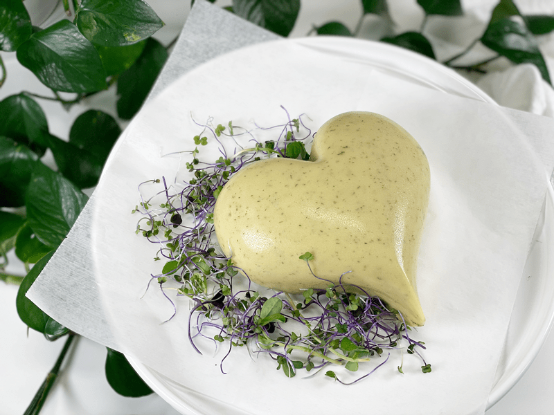
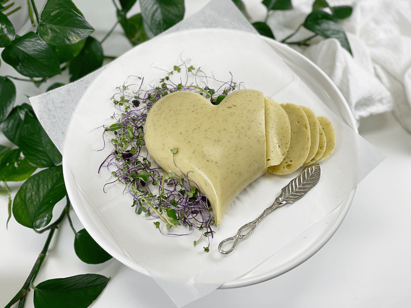

Wasabi Vegan Cheese | Potato-Based | Nut-Free | Oil-Free
When you love and adore someone, what better way to show it than by making heart-shaped vegan cheese?! I mean…doesn’t everybody? Truth be told, I made this particular cheese for me. I made a different one that is cashew-based for Bob. I am not eating nuts or seeds at the moment, so I decided to make a potato-based one. So, I guess unconsciously I was showing myself some self-love when I worked out its presentation. Even during a pandemic, it’s important to continue to surround yourself with beauty. It helps keep a positive outlook that this too shall pass.

The star ingredient of this cheese is wasabi (the title gave that away). It is a Japanese root that belongs to the same family as horseradish, cabbage, and mustard. Dried and powdered wasabi first showed up at the start of the 20th century, as a way to preserve it. Wasabi is notoriously difficult to cultivate and grows naturally in mountain stream beds.
Several years back, a friend of mine mailed me one of her wasabi plants. For two years, I nurtured it in the kitchen. I was afraid to put it outside because it looks so fragile and delicate. But, as time went by, it started to suffer. I tried everything to save it, but it appeared to be on its last leg stem. Bob and I decided to plant it outside near our creek to give it one last hurrah!
I will be honest, I was figuring it would be no more than a week before that last stem was a thing of the past. Much to our surprise and delight, it started to thrive even as we headed into winter. Nowadays, it is flourishing–new stems, leaves, and even flowers. I feel kind of bad that I stunted its growth for so long, but thankfully it showed me some forgiveness by turning into a beautiful plant! There must be a lesson to learned in all that.

If you are a cheese aficionado, you should know that this recipe doesn’t compare side to side to dairy cheese. BUT if you want or need to avoid dairy, oils, soy, nuts, and seeds, well, then let me introduce a new concept that extends beyond the ol’ cheese wheel.
Ingredient Run-Down
Wasabi Powder
- Wasabi is hot, but not in the same way that hot peppers are hot. Hot peppers get their spiciness from the chemical capsaicin, whereas wasabi gains its spiciness from isothiocyanates, which create a vapor, like horseradish, that hits the nose, not really the mouth.
- Wasabi powder is, in theory, a hot-tasting powder made from the dried, ground roots of wasabi plants. But finding true wasabi can be hard and expensive; therefore many companies use horseradish in place of real wasabi. I found Sushi Sonic Real Wasabi powder at our local grocery store (shockeroo!). If you can’t find the real stuff, you can substitute the horseradish version.
- TECHNIQUE for wasabi powder: You should always create a paste with it before using it. In a small bowl, add enough cool water to avoid lumps forming, then let stand a few minutes for the flavor to develop. To get it hotter, once you have made the paste, turn the bowl upside down. The paste sticks to the bottom of the bowl; the developing gases are trapped, making the wasabi paste hotter. It will weaken if exposed to air, so don’t make it too far in advance.
Agar Powder
- The agar is what gives this cheese recipe the ability to hold its shape.
- Agar is an excellent vegan replacement for gelatin, which is derived from animal hooves. But don’t expect the same results when replacing gelatin with agar in a recipe. It won’t give the same texture. Agar gives a firmer texture. Plus, it is much more powerful than gelatin: 1 teaspoon agar powder is equivalent to 8 teaspoons gelatin powder.
- Agar has no taste, no odor, and no color. It sets more firmly than gelatin and stays firm even when the temperature heats up. The melting point is around 185 degrees (F).
- Read more (here).
White Chickpea Miso
- I am not a fan of soy-based products, so I use miso made from chickpeas. One thing that I have learned about miso, in general, is that every style and brand has a different saltiness to it. Knowing that, it’s wise to taste-test the brand you use before you start making the cheese base. If it is really salty, cut back on the added sea salt.
- IF you use soy-based miso, make sure that it is organic / NON-GMO, since most soy has been genetically modified.
Shapes and Molds
When creating vegan cheese such as this recipe with the ingredient agar, you can be so creative and use darn near any object for a mold. The main thing you want to avoid is molds/containers that have a lip that curls inward, which would permit the cheese from popping out. Silicone molds are the best, but I have used small glass containers, bread pans, mini tart pans, beakers, and so forth. There is NO need to grease or line the container. So much fun!
I hope this recipe finds you healthy. Keep nurturing your body with delicious and nutritious foods so you/we can come out of this stronger than ever! Sending you love and blessings, amie sue
 Ingredients:
Ingredients:
Yields 2 cups
Cheese base:
- 3/4 cup packed steamed potato, peeled
- 1 1/2 Tbsp wasabi powder + 2 Tbsp water
- 1 cup water
- 1/4 cup nutritional yeast
- 3 Tbsp lemon juice
- 1 Tbsp white chickpea miso
- 1 Tbsp dijon mustard
- 1 tsp Himalayan pink salt
- 1 tsp onion powder
- 1/4 tsp garlic powder
- 1/4 tsp dried onion flakes
- 2 tsp dried dill weed
Agar slurry:
- 1 cup water
- 5 Tbsp agar flakes or 1 1/2 Tbsp agar powder
Preparation:
Cheese base:
- Set aside a 2-cup container (mold). You can use just about anything to mold the cheese. Be creative. I find that I don’t need to grease or line the mold; the cheese just pops out.
- Wasabi paste: whisk the wasabi powder and 2 Tbsp of water in a small bowl. Set aside for 15 minutes.
- Creating a paste first will help activate the wasabi flavor. See the Ingredient Run-Down section above.
- In a blender, add the water, steamed potato, nutritional yeast, lemon juice, miso, wasabi paste, salt, mustard, onion powder, and garlic powder and blend until smooth. A food processor won’t work for this cheese.
Agar slurry:
- Place 1 cup of water and agar in a small saucepan. Whisk together until the slurry just starts to get a small boil. Reduce the heat and simmer, whisking often, for 5 to 10 minutes, or until completely dissolved.
- Once the slurry is ready, start the blender and get a vortex going. Quickly but carefully pour the agar slurry into the blender, add the dried minced onion and dill. Blend for about 10 seconds. As the agar slurry starts to cool it starts to thicken, so don’t dilly-dally here.
- Pulse in the onion flakes and dill.
- Pour into container(s) and cool uncovered in the refrigerator.
- When completely cool, cover and chill several hours. To serve, turn out of the container and slice.
- Store covered in the refrigerator. It will keep 5 to 7 days.
© AmieSue.com